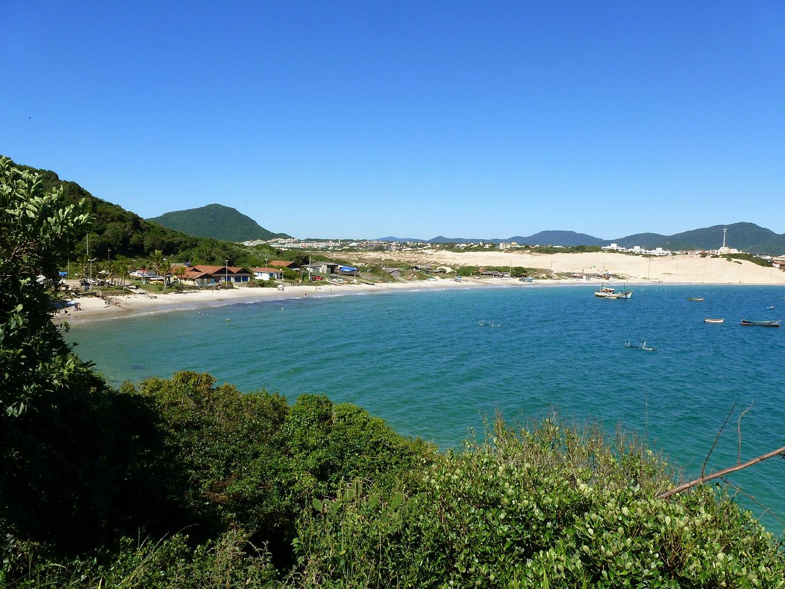
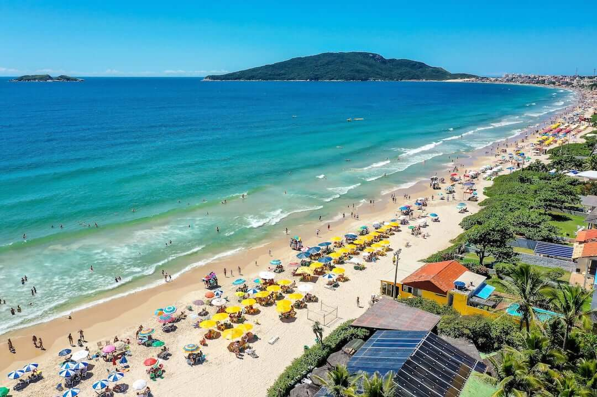
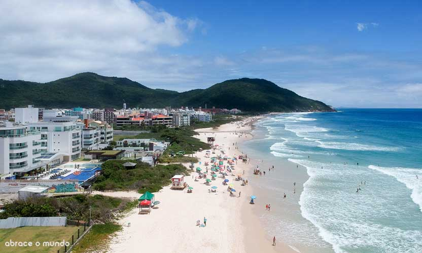

Como chegar a Praia dos Ingleses
A praia dos Ingleses fica a Nordeste da Ilha de Florianópolis, a 32 km da ponte e do centro. Chegando pela ponte, mantenha-se em uma das duas pistas da direita, seguindo rumo a Avenida Beira mar e Norte da Ilha. Basta seguir as sinalizações rumo ao Norte da Ilha e acessar a SC-401. Mais adiante haverá uma bifurcação á direita, pela SC-403 até a praia de Ingleses.
Sobre o Zinga
A Praia dos Ingleses é uma das mais movimentados de Florianópolis. Uma praia de águas calmas e mornas, com grande infraestrutura turística e 5km de extensão. Junto com Canasvieiras são as duas praias mais estruturadas da ilha. Com isso, recebe turistas o ano inteiro, mas principalmente, no verão.